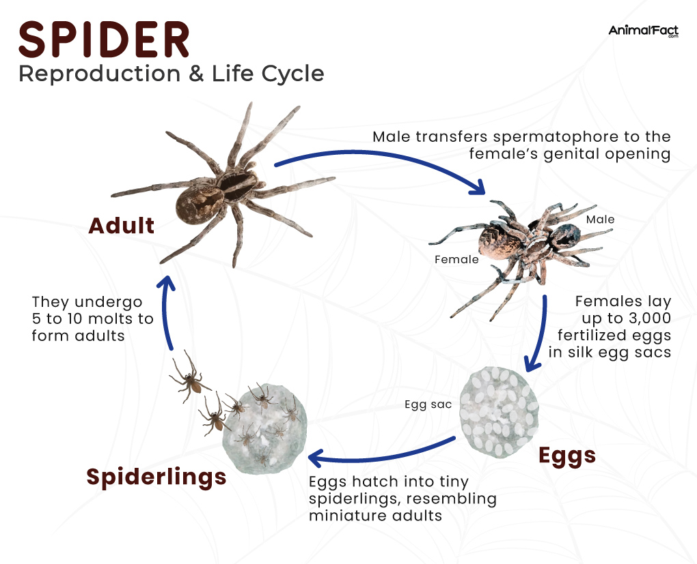
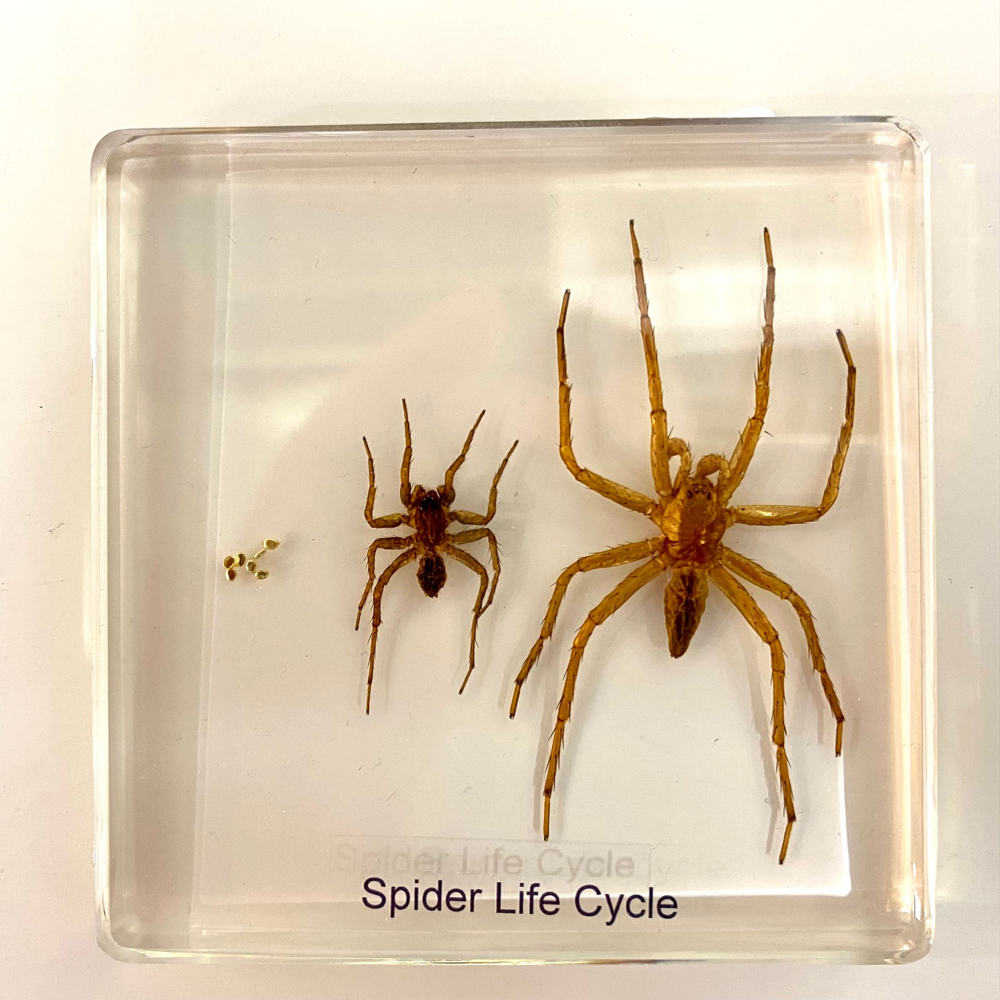
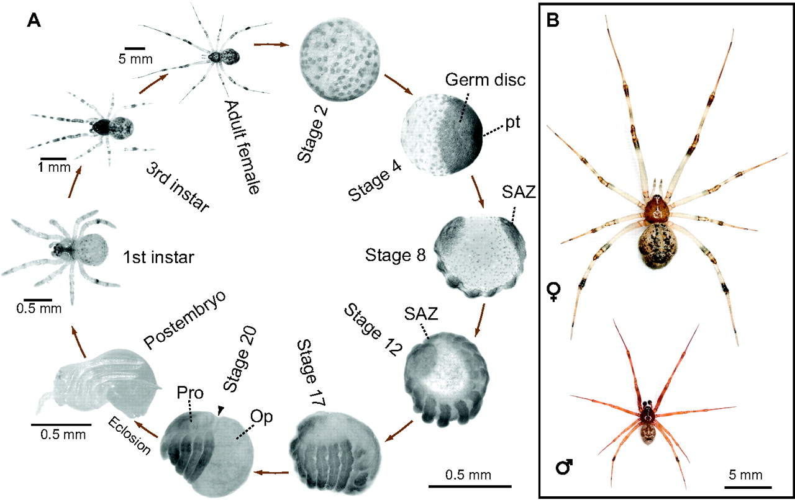

Life Cycle



The life cycle of a spider is that it has three stages. The first one is an egg. The second stage is spiderling. The last stage is an adult. During the eggs stage the female spider lays her eggs in a silk sac which can cotain from a few to several hundred eggs. While the mother carry the eggs onn her back and leaves it in a safe location or attach to the web. During the spiderling stage the spiderlings hatch from the egg they are mini version of the adult spider and are protected within the egg sace until they are ready to emerge. When they hatch they often disperse by walking or using the silk thread to catch wind. In the adult stage the spiders contuine to grow until they are adults when they reach adult hood they are able to reproduce.